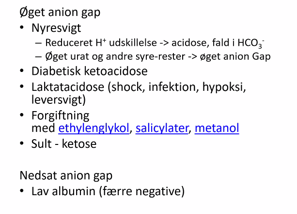

Case 1
Første vagt på kirurgisk afdeling. kl 19:30
Kom lige ind og se på 14.2
Han har det vist ikke så godt
Han er bevidstløs
76-årig mand
Højresidig hemikolektomi
BT 105/65
Puls 55
SAT 85
RF7
Miotiske pupiller
- Anastomoselækage ikke så tidligt.
- Første mistanke => forgiftet
Overvejelser
- Er det en forgiftning?
- Antidot?
- Understøttende behandling
- Atid tænk på dette
- Kør ABCDE
- A
- Lejring
- Kæbeløft (Dette skal KBU'en gøre, så bliver anæstesien glad)
- Sug
- tungeholder (pas på)
- Nasal airway
- Tube
- B
- C
- D
- Kramper
- Glukose
- E
- Stand ulykken, eksp for toxin
- Hypertermi el. hypo-
- A-gas
- Sidegevinst: De kan vågne op fordi det er ubehageligt
- Gør dette altid
Morfika
- Post-op
- Miotiske pupiller
- Resp dep
- CNS påvirkning
- Specifik antidot
- naloxon
- Kortvarig T1/2 i forhold til "gift"
- Skal gentages derfor.
- Giv det lidt forsigtigt i flere doser.
- naloxon
- Tramadol
- Naloxon virker ikke altid
- Stand ulykken
- Kig efter plastre
- Undersøg hele kroppen.
- Renal udskillelsen - aktiv metabolit der ophobes ved nedsat nyrefunktion
- Her man kan bruge oxynorm der ikke udskilles renalt.
Hvad kan det ellers være?
- Meningit
- Kramper — postictal
- Blødning.
- ”Funktionelt”
- Delirium / Akut psykose / Delirium Tremens
- Sepsis — svær infektion. Pas på ikke at blive fanget i situationsbaseret, kunne også være ASA
Hvad, hvor og hvor meget?
- Kig på pilleglas, resterende piller
- Vejledende naturligvis
- Kig på FMK inden de ankommer
- Giver meget info om medicin og diagnoser
- Afskedsbrev.
- Suicidalønske
- Er det konkret?
- Tvang (røde papirer)
- Kan tage tid, derfor §19
- Sundhedsloven §19
- Man kan starte med at handle, derefter tvang
- "Det er ret vigtigt med §19"
Case 2
- Smerter i øvre abdomen
- Tager ingen medicin
- Ingen medicin i FMK
- ALAT > 7000
- Tog panodil i håndkøb.
- Pointe: Spørger på den rigtige måde (håndkøbsmedicin opfattes ikke som medicin fx, eller p-piller)
Blodprøver
Ikke så stor betydning akut, men godt at have senere. * ”Bevismateriale” * Levertal * Væsketal * Ethanol * Paracetamol * Salicylat * Glukose
Ovevågning
- SAT
- RF
- Telemtri - Husk navn. Se på den.!
- KAD
- Drugtest
- JA / NEJ svar.
- Ganske hurtigt - 10 min
- Måler kun bestemt stoffer
- Meget sensitivt
- Kan have taget i sidste uge, og det ikke er problem
- Skal være udskilt i urin
- Ikke udskilt i urin endnu?
Undersøgelse
- GCS
- Pupilforhold
- SUpergodt, toksidromer
- Hud
- Cyanose
- Stikmærker
- Temperatur, evt. blære
Giftlinjen
- Direkte telefon: 38635555
- Man skal vide hvad de er forgiftet med.
Stands ulykken
- Ventrikelaspiration
- på BBH var de meget skeptiske omkring dette
- Skal være stor kaliber, så pillerne kan komme igennem
- Aktivt kul
- 4 timers vindue
- Kan være længere ved depottabl.
- Forsinket ventrikeltømning
- Beta-blokker
- 1 gram kul binder ca. 0,1 g giftstof
- 50 g i flaske. 1-2 flasker
- Ikke alle stoffer:
- Jern?
Tvangsbehandling
- Panodil
- Man behøver ikke kul, men kan bruge N-acetylcystein
- Betablokker
- Så kører vi aktivt kul
Selvmord
Det er faktisk ulovligt.
Case
45-årig mand Kørsel A kl 03:04 Overdosis med piller. Selv ringet 112, da han fortryder
Kl 00:40 taget en håndfuld Paracetamol og en håndfuld Klorzoxazon
BT 119/86 puls 62 SAT 98 RF 13 tp 36.3
Behandling
- N-acetylcystein "NAK-drop"
- Forsæt NAC-drop *
- Kontrol bp 12 timer
- Overflyttes til psykiatrisk afd.
- Underretning til kommunen da der er børn 5 og 10 år.
NAC-drop stopregler
- ALAT og P-paracetamol
- INR ..
- Kan overflyttes til specialafd.
- Høj ALAT, INR > 1,6
- Metabolisk acidose med nyrepåvirkning
- Heptaisk encefalopati
Aktivt kul
Man skal passe på luftveje. Hvis bevidsthedspåvirket, da tube for at kunne give det i sonde. Kald på anæstesien
Aniongap
Hvad er det vi ikke ser i BP'erne Beregnes ud fra Na K, Cl, HCO3
Øget aniongap

Kølervæske
- monoethylen glycol
- Omdannes til aktive og gifte metabolitter
- Glykolsyre
- Oxalat
- Toksisk grænse
- 0,2 ml/kg
- Lethal: 1,5 ml/kg
- Antidoter
- Formepizol
- Dyrt, skal skaffes fra RH og Skejby, derfor bruges Ethanol mellemtid.
- Ethanol
- Konkurrer på enzymerne, så metabolitter ikke dannes.
- Formepizol
- En af metabolitter kan på ABL'er give fejlagtigt høje laktater på 50+
- Aktivt kul virker IKKE på monoethylen glykol
- Sjældend forgiftning. Ligner slushice og smager sødt.
Rusmidler
- Sløvende: Alkohol, hash, heroin, GHB
- Centralstimulerende: Amfetamin, kokain, MDMA
- Hallucinogener: Syre, svampe, LSD
Daterape drugs
- Alkohol
- GHB
- MDMA
- Ketamin
- Clonidin - syreustabilt, derfor ikke godt til syrlige drinks
Svampe
- Amatoxin - hvid og grøn fluesvamp + andre.
- Der findes antidot
- Aktivt kul hver 4. time i 3 døgn
- Indgår i galdekredsløb, så det udskilles i galde.
- Silibinin (RH)
- Benzylpencillin (hvis man ikke har silibin)
- NAC-drop.
- Aktivt kul hver 4. time i 3 døgn
- Ved leverskade, da er Levercenter.
- Der findes antidot